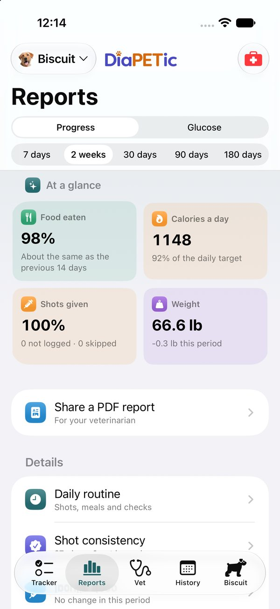
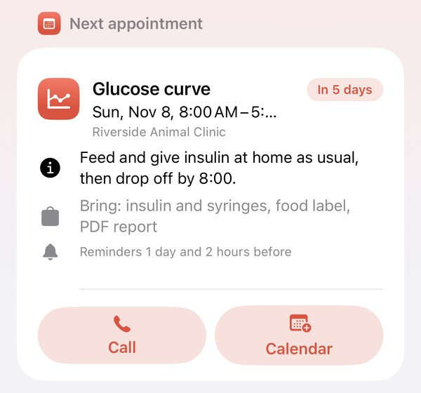
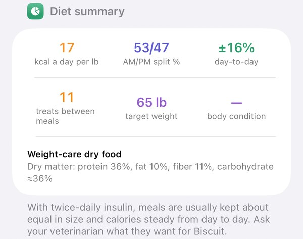
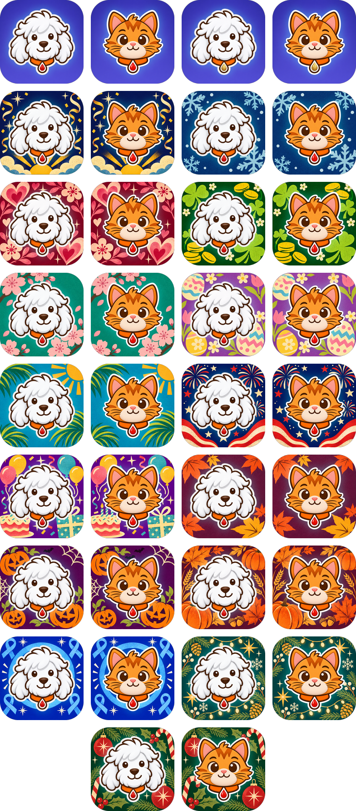

Diabetes care for dogs and catsEvery shot. Every meal.
Made for anyone caring for a diabetic dog or cat, especially in the first weeks after a diagnosis. DiaPetic reminds you when each shot is due and shows when the last one was given, so you do not have to guess. At checkup time, your records become a report for your vet.
Free to use, with no trial period and no ads. Everything stays on your iPhone. No account, no tracking.
What it does
Built for the daily routine of a diabetic dog or cat
Diabetes care means insulin twice a day, carefully timed meals, and regular conversations with your vet. DiaPetic keeps it all in one place, so you can see what has been given and what is still due.
Quick daily logging
Record each shot with the time it was given, how much of each meal was eaten, and a brief daily check-in that defaults to normal. You can log a shot from the reminder itself, without opening the app.
Reminders for each day
Reminders for insulin, meals, medications, glucose checks and appointments, with a follow-up if a shot has not been recorded.
Reports for your veterinarian
Clear summaries covering 7 to 180 days, including shots, appetite, symptoms, weight, glucose curves and dose history, ready to share as a PDF. Your vet can see how things went between visits.
Help in an emergency
An emergency button on every screen with step-by-step guidance for low blood sugar, missed or repeated doses and other urgent situations.
Supply tracking
Keeps track of the insulin bottle in use, spare bottles, syringes and food, and alerts you before anything runs low. That leaves time to order a refill.
A daily journal
Record observations by typing or speaking. Entries are saved with the day's records and included in your reports.
Our story
Made for Obi
DiaPetic began as a tracker the developer built for his diabetic Sheepadoodle, Obi, to keep his insulin, meals and vet notes in order.
Other families caring for a diabetic pet need the same thing, so DiaPetic is now on the App Store. The daily care tools are free, because a new diagnosis brings enough costs already. Everything stays on your iPhone. No account, no tracking.
Inside the app
Real screens from the app

Progress reports for your vet

Appointments synced with your calendar

Detailed nutrition tracking

Dog and cat app icons with seasonal designs (Gold)
Guides for owners
Help for the first months of pet diabetes
Plain guides on keeping records and getting ready for vet visits, whether or not you use DiaPetic.
Pricing
Free to use, with an optional one-time upgrade
The tools for your pet's daily safety are part of the free app: shots, reminders, emergency help and your records.
Free
$0
Everything you need for daily care
Daily logging of shots, meals and check-ins
Insulin reminders and follow-ups for unrecorded shots
Emergency guidance on every screen
Appointments with calendar sync
Supply tracking, journal and backups
On-screen reports for the last 30 days
No trial period and no ads
DiaPetic Gold
$9.99 one time, no subscription
Pay once and it is yours. Thank you for supporting DiaPetic.
PDF and CSV reports for your vet
90- and 180-day trends
Multiple pets
Your pet's photo
Medication schedules with your own times
Medication supply with refill reminders
Custom reminders, such as heartworm prevention, refills and vaccines
Dog and cat app icons with seasonal designs, or a gold collar tag
Shared with your Family Sharing group
Download DiaPetic
Free to use on iPhone. Start with today's shots and meals, and add DiaPetic Gold ($9.99, one time, no subscription) when you want longer reports or more pets.
Scan with your iPhone camera to open the App Store.
Important: DiaPetic is a record-keeping tool. It does not recommend insulin doses or changes to treatment and is not a substitute for veterinary care. Always follow your veterinarian's instructions.